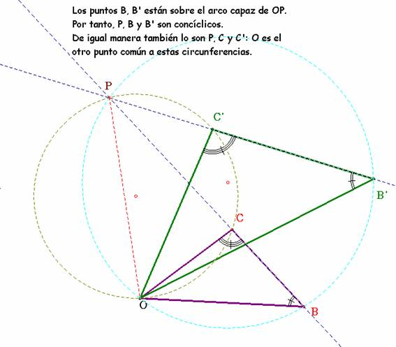
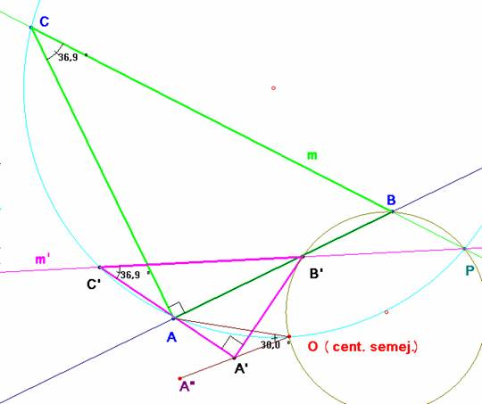

Para el aula
Problema 281
11.20 Las hipotenusas de dos triángulos rectángulos semejantes están
sobre dos rectas m y m’ que forman un ángulo de 30º y se cortan en un punto P.
Los vértices B y C del primero distan de P, PB=1, PC=6, y los vértices B’y C’ del segundo, homólogos de B y C en la semejanza,
PB’=2 PC’=4,5. Los catetos del primer triángulo miden b=4 c=3. Sabiendo que la
semejanza entre los dos triángulos es directa, halla:
a) el centro o punto doble de la semejanza directa.
b) dibujado el primer triángulo ABC, halla A’, homólogo del vértice A
del ángulo recto del primero, utilizando para ello el giro y la homotecia de
cuyo producto resulta la semejanza.
Martínez, J. Bujanda, M.P., Velloso, J.M. (1984): Matemáticas -1 (Escuelas Universitarias de
Magisterio de E.G.B.) Ediciones S.M.
Madrid (Pág. 382).
Con el permiso de Mari Paz Bujanda, a quien el director agradece su gentileza.
Solución Saturnino
Campo Ruiz, profesor del IES Fray Luis
de León de Salamanca.-
a) El centro de semejanza O es el único punto fijo en la transformación. Los triángulos OCB y OC’B’ son semejantes. Si P es la intersección de BC con B’C’, B y B’ están en el arco capaz de OP y ángulo f = áng(OBC)=áng(OB’C’). Del mismo modo con el ángulo d = áng(OCP) = áng(OC’P) encontramos que O, P, C y C’ son concíclicos. En resumen: O se obtiene como intersección de dos circunferencias según se puede observar en la figura.

Aplicando estas ideas al caso
particular que nos ocupa y calculamos en centro O de semejanza. (
El punto B’ no está sobre el lado AB ni tampoco A sobre A’C’ como parece sugerir la figura). Hemos tomado la unidad de medida igual a

b) A partir de A, con centro en O realizamos un giro de 30º que nos lleva el punto A hasta A”. Como la homotecia tiene razón ½ para hallar A’ basta con tomar el punto medio del segmento
OA”.